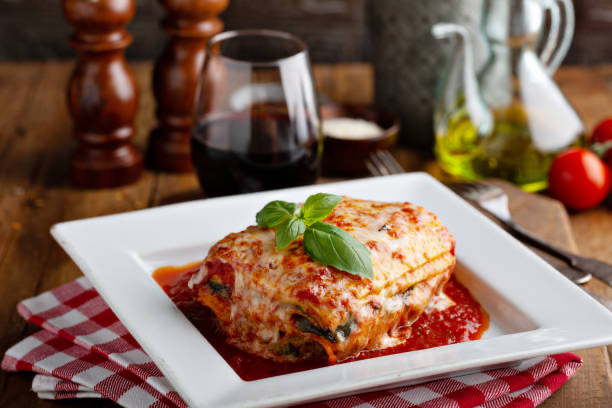

Lasagna

The World's BEST Lasagna
This is an easy, cheesy & flavorful lasagna recipe. Just because it's easy, doesn't mean it's not good though! This recipe is perfection & will become a staple in your house.
Preparation time is about 45 minutes, and the lasagna will need to bake in the oven at 375 °F for a total of 45 minutes.
Ingredients
Cheese Filling
- 2 cups ricotta cheese
- 1 large egg
- 2 cups mozzarella cheese
- ¾ cup Parmesan cheese
- 2 teaspoons Italian seasoning
- ½ teaspoon salt
- ¼ tsp pepper
Meat Sauce
- 1 tablespoon olive oil
- 1 yellow onion, finely diced
- ¾ lb. ground beef
- ¾ lb. ground Italian sausage
- 3 cloves garlic
- ½ cup chicken broth
- 40 oz. marinara sauce
- 1 tablespoon tomato paste
- 1 teaspoon hot sauce
- 1 teaspoon Worcestershire sauce
Lasagna
- 12 lasagna noodles
- 2.5 cups mozzarella cheese
Instructions
- Combine the cheese filling ingredients in a medium bowl and set aside.
- Add onions to a pan over medium heat. After they have softened add the ground beef and sausage. Break up the meat until its crumbled. When cooked through, add garlic.
- Add chicken broth, marina sauce, tomato paste, hot sauce, and Worcestershire sauce. Bring that to a boil, then reduce to a simmer.
- Preheat oven to 375 degrees fahrenheit.
- Bring a larger pot of salted pasta water to a boil, and put in the lasagna noodles. Once cooked, drain and rinse the noodles with cold water.
- Spread meat sauce on the bottom of the casserole dish, then layer lasagna noodles, spread ricotta cheese mixture over the noodles, followed by more meat sauce. Follow this pattern until all ingredients are used.
- Top with cheese, cover with tinfoil, and cook for 35 minutes. Remove the tinfoil and cook for 10 more minutes. Remove and garnish with parsley. Allow to cool for 15 minutes.